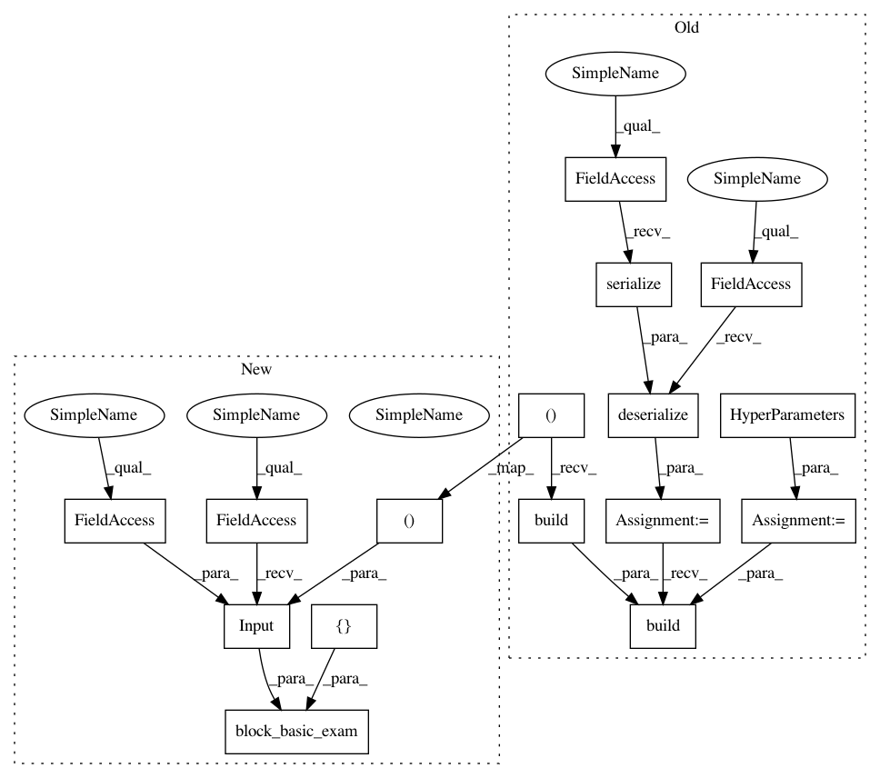

2e3ecf5ad4817912b14f8e17625aaa24185081c6,tests/autokeras/hypermodels/wrapper_test.py,,test_text_block,#,23
Before Change
def test_text_block():
block = wrapper.TextBlock()
hp = kerastuner.HyperParameters()
block = graph_module.deserialize(graph_module.serialize(block))
block.build(hp, ak.TextInput(shape=(1,)).build())
assert utils.name_in_hps("vectorizer", hp)
After Change
def test_text_block():
utils.block_basic_exam(
wrapper.TextBlock(),
tf.keras.Input(shape=(1,), dtype=tf.string),
["vectorizer"],
)
def test_structured_data_block():
block = wrapper.StructuredDataBlock()
In pattern: SUPERPATTERN
Frequency: 3
Non-data size: 16
Instances
Project Name: keras-team/autokeras
Commit Name: 2e3ecf5ad4817912b14f8e17625aaa24185081c6
Time: 2020-05-20
Author: jin@tamu.edu
File Name: tests/autokeras/hypermodels/wrapper_test.py
Class Name:
Method Name: test_text_block
Project Name: keras-team/autokeras
Commit Name: 2e3ecf5ad4817912b14f8e17625aaa24185081c6
Time: 2020-05-20
Author: jin@tamu.edu
File Name: tests/autokeras/hypermodels/wrapper_test.py
Class Name:
Method Name: test_structured_data_block
Project Name: keras-team/autokeras
Commit Name: 2e3ecf5ad4817912b14f8e17625aaa24185081c6
Time: 2020-05-20
Author: jin@tamu.edu
File Name: tests/autokeras/hypermodels/wrapper_test.py
Class Name:
Method Name: test_image_block